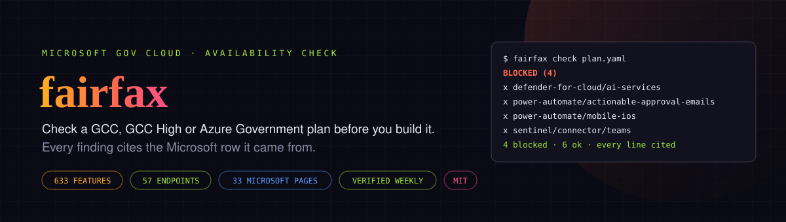

Check a Microsoft gov-cloud plan before you build it
fairfax is an open source command-line tool and dataset for Microsoft's US government clouds. Give it your tenant type (GCC, GCC High or DoD), your Azure cloud and the features you plan to use. It tells you what Microsoft doesn't offer there, what can't cross between the clouds and what is retiring, and quotes the Microsoft row behind each answer.
View on GitHub Browse the availability tables pip install fairfaxThe problem
Microsoft's US government clouds are not copies of commercial Microsoft 365 and Azure. GCC, GCC High, DoD and Azure Government each lack features that commercial has, and some pairings of them can't talk to each other at all. Microsoft does publish the gaps, spread across more than a dozen Learn pages and a PDF it republishes every few weeks. Most teams find them halfway through a build, when a connector never shows up or a sign-in fails with a wrong-cloud error.
What it catches
The repository ships a made-up example: a state agency's field inspection app on GCC High and Azure Government.
$ fairfax check examples/field-inspections/plan.yaml
fairfax check: Field inspection app (synthetic example)
tenant GCC High, Azure Government | 10 features | 187 facts, pages checked 2026-10-11
BLOCKED (4)
defender-for-cloud/ai-services
Microsoft Defender for AI Services: not available in Azure Government.
Works in commercial Azure (GA).
source: Cloud feature availability for US Government customers
page updated 2026-09-03, checked 2026-10-11
https://learn.microsoft.com/en-us/azure/security/fundamentals/feature-availability#microsoft-defender-for-cloud
row: - Microsoft Defender for AI Services | GA | Not Available
power-automate/actionable-approval-emails
power-automate/mobile-ios
sentinel/connector/teams
...
4 blocked, 0 cross-cloud, 0 retiring, 1 note, 6 okfairfax check exits 1 when anything is blocked and fairfax scan exits 1 on a wrong-cloud
endpoint, so both work as CI gates.
Availability tables
The same dataset, as tables with Microsoft's row, the page link and the dates for every entry:
- Microsoft Sentinel in Azure Government, GCC, GCC High and DoD: 54 entries
- Microsoft Defender for Cloud in Azure Government: 24 entries
- Azure Machine Learning in Azure Government: 23 entries
- Azure OpenAI models in Azure Government: 11 entries
- Azure AI Language in Azure Government: 5 entries
- Power Platform in GCC, GCC High and DoD: 70 entries
- Azure Government and GCC High endpoints: 55 host mappings
Quick start
pip install fairfax
fairfax facts --grep sentinel # feature keys and their status per cloud
fairfax check plan.yaml # text report; --format md or json
fairfax scan src/ --tenant gcchigh --azure government
fairfax facts --stale 90 # cited pages due for another checkPython 3.10 or newer, MIT licensed, one dependency (PyYAML). A plan is a short YAML file:
name: Field inspection app
tenant: gcchigh # gcc | gcchigh | dod
azure: government # commercial | government
features:
- power-automate/actionable-approval-emails
- sentinel/connector/teams
- azure-openai/gpt-4oHow the data stays honest
- Every entry stores the Microsoft page, the section anchor and the row exactly as Microsoft wrote it.
- Statuses were parsed from those rows by a script, not retyped, and the tests re-parse them on every run.
- Each entry carries the page's own updated date and the date fairfax last checked it.
- Where Microsoft's tables don't answer a question, fairfax says so instead of guessing.
FAQ
How do I check whether a Microsoft feature is available in GCC High or Azure Government?
Microsoft publishes availability per cloud across many pages: fairfax cites 14 Microsoft Learn pages and a PDF, and collects 187 feature rows from them. Run pip install fairfax, then fairfax facts --grep <name> to see a feature's status in each cloud, or browse the availability tables on this site. Each row links to the Microsoft page it came from.
What is the difference between GCC, GCC High and DoD?
They are separate US government clouds for Microsoft 365, and they differ in where users sign in and in which features exist. GCC signs users in through commercial Entra ID (login.microsoftonline.com), while GCC High and DoD sign in through Azure Government (login.microsoftonline.us). GCC support runs on worldwide terms, with no assurances about where support agents are or what citizenship they hold. Of the 70 Power Platform features fairfax tracks, 28 are not available today in GCC, 34 in GCC High and 45 in DoD.
Can a GCC tenant send data to Microsoft Sentinel in Azure Government?
Not through the Microsoft 365 data connectors. Microsoft marks a GCC tenant with a Sentinel workspace in Azure Government as not possible for all 13 connectors fairfax tracks, because a GCC tenant's data lives in commercial Azure. A GCC tenant connects to a workspace in commercial Azure; GCC High and DoD tenants connect to a workspace in Azure Government.
Which Azure OpenAI models are available in Azure Government?
Microsoft's page of Foundry Models sold by Azure in Azure Government (updated 2026-09-01) lists gpt-4.1, gpt-4.1-mini, gpt-4o, gpt-5.1, gpt-5.6-luna, gpt-5.6-sol, gpt-5.6-terra, o3-mini, text-embedding-3-large, text-embedding-3-small, text-embedding-ada-002. Deployment types differ by model and region, and the Azure OpenAI table on this site lists them for each model.
Which endpoints does GCC High use instead of login.microsoftonline.com and graph.microsoft.com?
GCC High uses login.microsoftonline.us for Entra ID sign-in and graph.microsoft.us for Microsoft Graph. DoD uses dod-graph.microsoft.us for Graph. A GCC tenant keeps login.microsoftonline.com and graph.microsoft.com. The endpoints page lists all 55 mappings, and fairfax scan finds commercial hosts in your code.
Does fairfax need access to my tenant or Azure subscription?
No. It reads a plan file and your source code on your own machine and never connects to Microsoft 365 or Azure. The data ships inside the package.
How current is the data?
Every entry stores the Microsoft page's own updated date and the date fairfax last checked it. All 15 cited pages were checked on 2026-10-11. A weekly workflow lists pages that have gone more than 90 days without a check.
Is fairfax made by Microsoft, and is it compliance advice?
No to both. fairfax is an independent open source project under the MIT license. It tells you whether Microsoft offers a feature in a cloud, quoting Microsoft's own rows. It doesn't tell you whether your use of a feature meets FedRAMP, ITAR or CMMC.